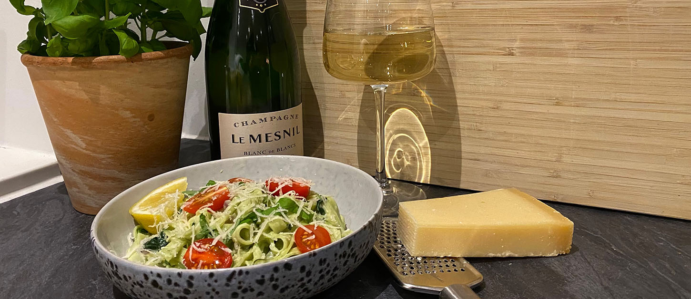

PASTA FETTUCCINE:
ITALIENSK PASTA MED RØDDER TILBAGE 1908
Urtekrams italienske Fettuccine er fremstillet af 100% durum hvede og lokalt kildevand fra Dolomitterne af Pastificio Felicetti srl. grundlagt i 1908 i Predazzo i hjertet af Valle di Fiemme ved bjergkæden Dolomitterne.
Felicetti familien har fremstillet traditionel italiensk pasta i fire generationer. Pastaen er støbt i bronceforme for at opnå en ru overflade til fastholdelse af saucen og derpå omhyggeligt tørret i respekt for faconen. Felicetti pasta er unik smag og perfekt struktur.